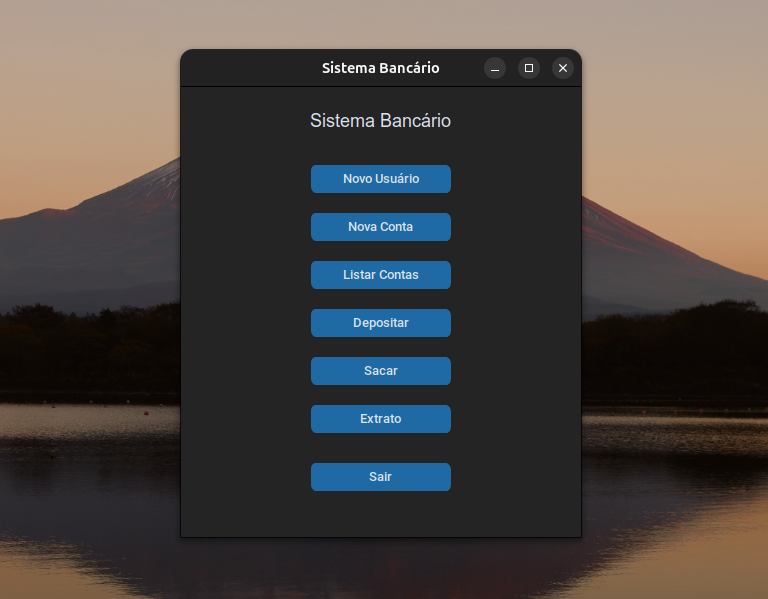
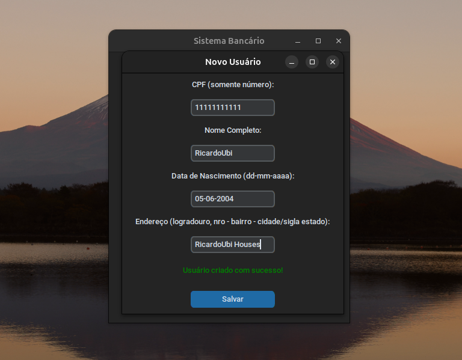
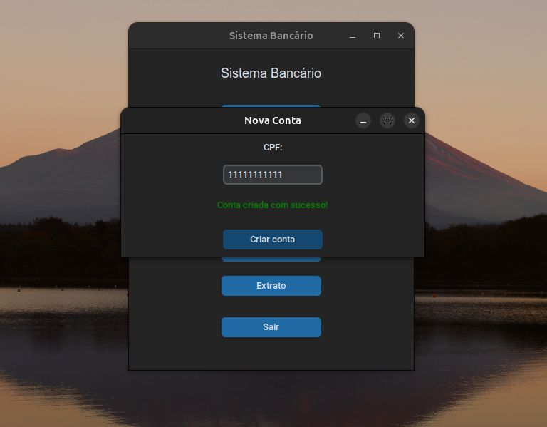
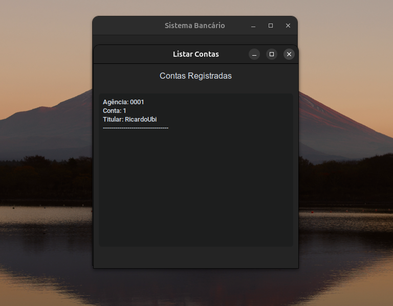
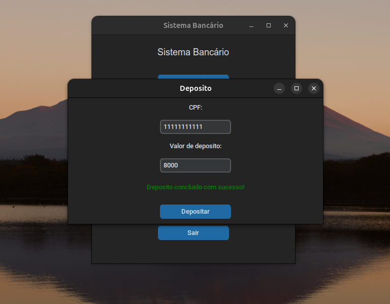
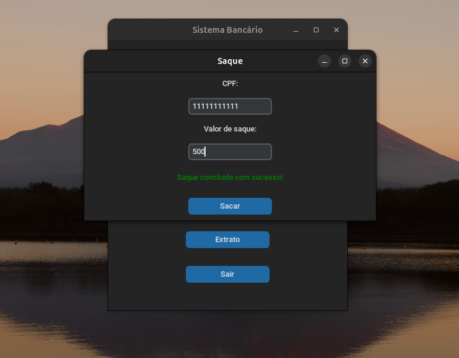
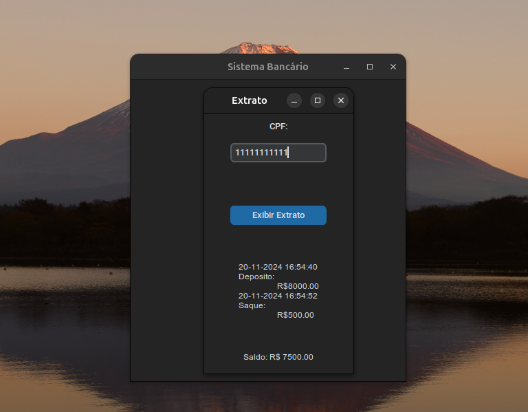

Desenvolvendo um sistema bancário simples com Python
Neste artigo, vou demonstrar como desenvolver um sistema bancário simples utilizando Python e CustomTkinter. Vou abordar desde a configuração inicial do projeto até a implementação das funcionalidades principais do sistema.
Como esta é uma breve demonstração, recomendo que leia o code e o estude, seu link estará disponivel no final da publicação. Se você já possuir conhecimento em programação orientada a objetos será fácil e rápido entender a implementação. Caso não tenha conhecimento de POO (Programação orientada a objetos), recomendo que se aprofunde no tema para facilitar a sua compreensão deste sistema.
Configurações Iniciais do Ambiente
Antes de começar, é necessário preparar o ambiente de desenvolvimento. Este projeto utiliza Python 3.12 ou superior. Para configurar:
Crie um ambiente virtual (opcional):
# Terminal
python3 -m venv venv
Ative o ambiente virtual:
# Terminal
## Linux
source venv/bin/activate
## Windows
venv\Scripts\activate
Instale o CustomTkinter (Obrigatório):
# Terminal
pip install customtkinter
Estrutura do Sistema
O sistema é dividido em duas partes principais:
- Lógica: Responsável pelo funcionamento interno das funcionalidades.
- Interface: Responsável pela interface gráfica do software.
Classes e Organização do Sistema
A base do sistema é composta por três classes principais: Usuário, Conta, ContaCorrente e Histórico.
-
Classe Usuário: Representa os clientes do banco.
class Usuario: ''' Classe de Usuario ''' def __init__(self, endereco): self.endereco = endereco self.contas = [] self.indice_conta = 0 -
Classe Conta: Representa as contas do banco.
class Conta: ''' classe de conta ''' def __init__(self, numero, usuario): self._agencia = "0001" self._numero = numero self._saldo = 0 self._usuario = usuario self._historico = Historico() -
Classe ContaCorrente: Gerencia o saldo e as transações.
class ContaCorrente(Conta): ''' classe de conta corrente''' def __init__(self, numero, usuario, limite=500, limite_saque=3): super().__init__(numero, usuario) self.limite = limite self.limite_saque = limite_saque -
Classe Histórico: Registra as transações realizadas em uma conta.
class Historico: ''' classe do historico ''' def __init__(self): self._transacoes = []
Integração com CustomTkinter
Cada funcionalidade do sistema tem sua janela própria, garantindo uma organização clara.
- 1. Interface inicial: Nesta tela é possivel acessar todas as funcionalidades do software. 
- 2. Cadastro de usuarios: A tela de cadastro permite que novos usuários sejam adicionados ao sistema. 
- 3. Abertura de conta: A funcionalidade permite abrir contas bancarias. 
- 4. Listagem de contas: Nessa tela é possivel ver todas as contas que existem no sistema. 
- 5. Deposito : A funcionalidade de depósito permite que os clientes adicionem dinheiro às suas contas. 
- 6. Saque : A funcionalidade de saque permite que os usuarios retirem fundos de suas contas. 
- 7. Extrato : A funcionalidade de extrato lista todas as transações realizadas. 
Conclusão
Este sistema bancário simples demonstra como combinar conceitos de programação orientadas a objetos e uma interface gráfica moderna para criar um software funcional. Ele pode ser expandido para incluir mais funcionalidades, como transferências entre contas, autenticação de usuários, e persistência de dados com banco de dados.
Experimente adaptar este sistema às suas necessidades e explore mais recursos do Python e CustomTkinter!
Você pode consultar o projeto no Github clicando aqui.
Divirta-se!